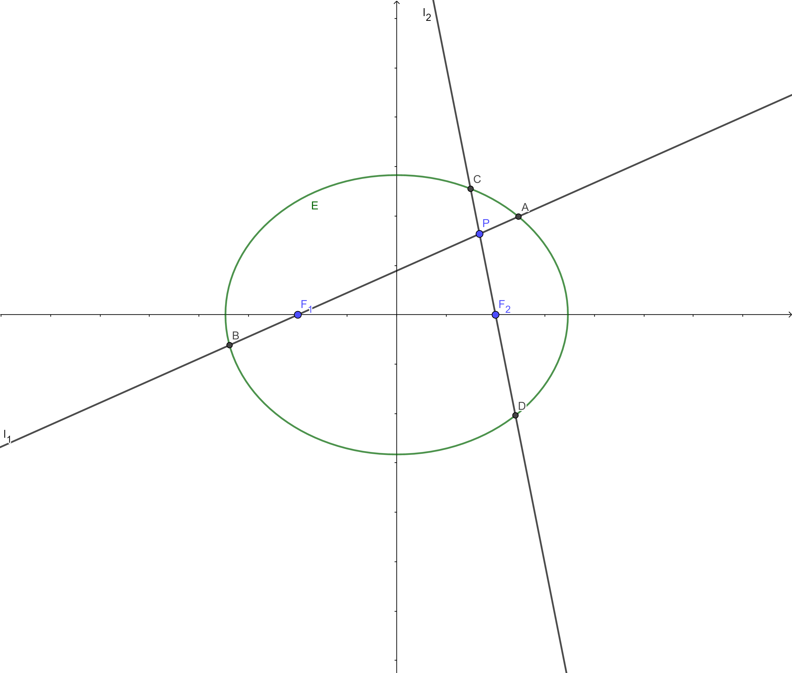

题干
题图如上，以下是题干：
$ 如图分别过椭圆E:\frac{x^2}{3}+\frac{y^2}{2}=1左右焦点F_1、F_2的动直线l_1、l_2相交于点P$
$与椭圆E分别相交于A,B和C,D不同四点，直线OA,OB,OC,OD的斜率k_1,k_2,k_3,k_4$
$k_1+k_2=k_3+k_4恒成立，求P点的轨迹$
巧解
$椭圆E化为2x^2+3y^2-6=0$
$已知c=1，设两直线$
$l_1:-x+my=1$
$l_2:x+ny=1$
$分别代入两直线方程得(齐次式):$
$2x^2+3y^2-6(-x+my)^2=0$
$2x^2+3y^2-6(x+ny)^2=0$
$整理得:$
$-4x^2+(3-6m^2)y^2+12mxy=0$
$-4x^2+(3-6n^2)y^2-12nxy=0$
$同除x^2，得:$
$(3-6m^2)k^2+12mk-4=0$
$(3-6n^2)k^2-12nk-4=0$
$根据韦达定理，得:$
$k_1+k_2=-\frac{3-6m^2}{12m}$
$k_3+k_4=\frac{3-6n^2}{12n}$
$令k_1+k_2=k_3+k_4，解得:mn=\frac{1}{2}$
$将m=\frac{1}{2n}代入l_1得:$
$l_1:-x+\frac{1}{2n}y=1$
$l_2:x+ny=1$
$消去两方程中的参数n，得:$
$P:\frac{y^2}{2}+x^2=1(椭圆)$
硬解(一般解法)
$椭圆E化为2x^2+3y^2-6=0$
$已知c=1，设两直线$
$l_1:x=my-1$
$l_2:x=ny+1$
$分别代入两直线方程得:$
$(3+2m^2)y^2-4my-4=0$
$(3+2n^2)y^2+4ny-4=0$
$根据韦达定理，得:$
$y_1+y_2=\frac{4m}{3+2m^2},y_1y_2=-\frac{4}{3+2m^2}$
$y_3+y_4=-\frac{4n}{3+2n^2},y_3y_4=-\frac{4}{3+2n^2}$
$经过大量(真的很大量)运算后可得到:$
$k_1+k_2=\frac{y_1}{x_1}+\frac{y_2}{x_2}=\frac{4m}{2m^2-1}$
$k_3+k_4=\frac{y_3}{x_3}+\frac{y_4}{x_4}=\frac{4n}{2n^2-1}$
$令k_1+k_2=k_3+k_4，解得:mn=-\frac{1}{2}$
$将m=-\frac{1}{2n}代入l_1得:$
$l_1:x=-\frac{1}{2n}y-1$
$l_2:x=ny+1$
$消去两方程中的参数n，得:$
$P:\frac{y^2}{2}+x^2=1(椭圆)$
总结
在硬解的计算过程中不可避免地要遇到大量化简计算(不妨动手尝试一下计算)，十分容易出现错误，不推荐，我们重点讨论巧解中使用的方法。
巧解中使用的方法是我们数学老师教的，处理圆锥曲线中与斜率有关的问题时如果使用这种方法可以很大程度上简化运算。
观察解法可以发现，我们通过一种特殊的直线设法得到了一条等号两边次数不同而又各自相等的表达式，而且等号右边还是常数1。从性质来说，我们将这条方程的左边乘到任何一个整式上去，这个整式的值不会发生改变，但却升了一次，这就是我们所要利用的性质。
在巧解中有一步我们将方程两边同时除以x的平方，这一步的目的就是构造出一条关于k的一元二次方程，以便通过韦达定理直接得到两个k的关系。
但是要注意，我们将y除以x得到k，这其实隐含了一个重要的条件：直线过原点。因为只有过原点的直线上的点才能够直接通过y除以x得到这条直线的斜率。
那么问题来了，假如直线不过原点怎么办呢？这个好办，平移！总之只要让直线过坐标轴原点即可。这里肯定会有人觉得平移太麻烦了，还不如硬算呢，但其实如果试一下就会发现并不麻烦，至少比硬算要简单多了。
注意：如果斜率相关的直线过动点而非定点，不要使用这个方法。
整理一下：
思路上：
寻找两个k之间的关系—->考虑韦达定理—->构造k的一元二次方程—->构造齐次式—->平移—->将直线设为升次的形式
方法上：
构造变换进行平移—->设升次的直线方程—->代入圆锥曲线方程使其齐次—->将所得方程同除x的平方化为k的一元二次方程—->利用韦达定理得出k之间的关系